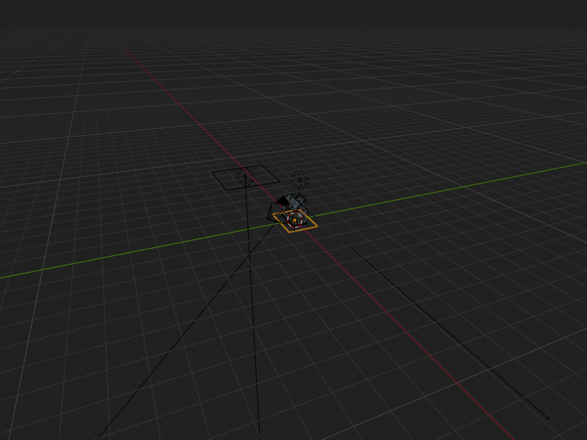
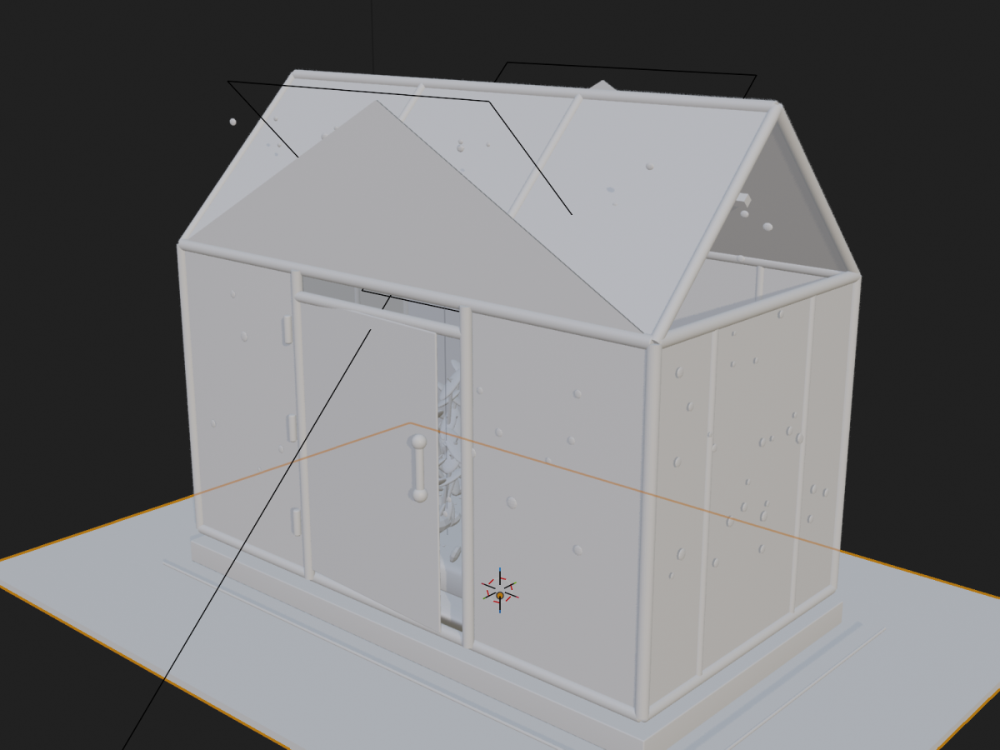
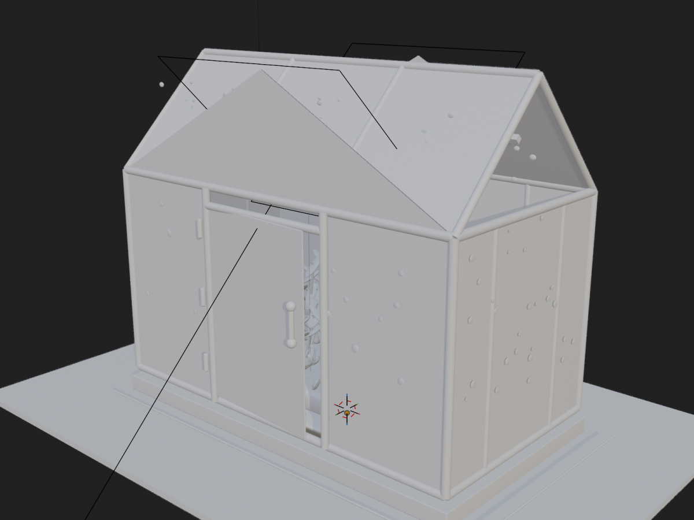
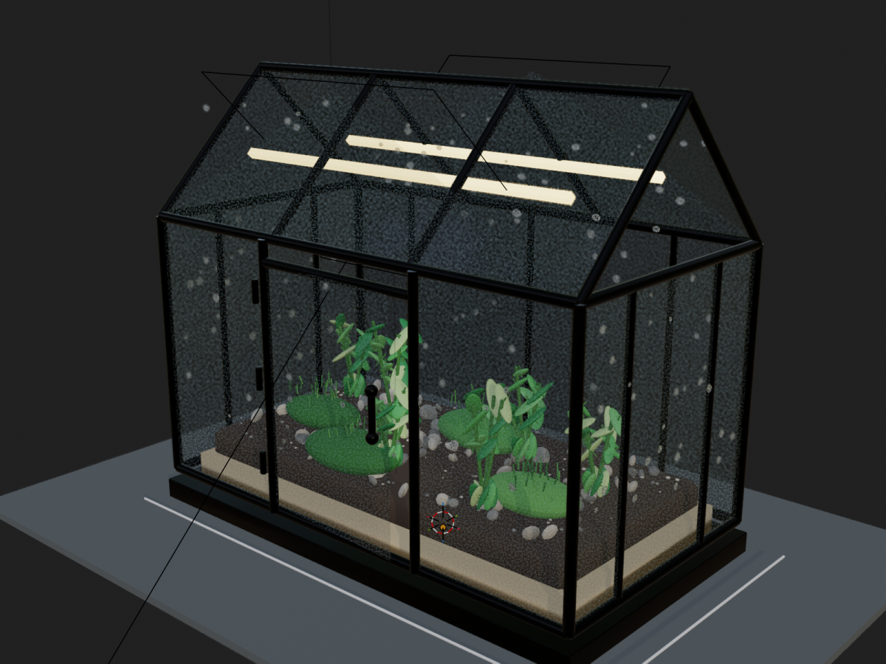

Glass greenhouse terrarium modelled from scratch and rendered with Cycles Codex
I’ll use the qwen-mm-plugins-blender skill and keep all scene work inside the Blender MCP tooling, as requested. I’m first loading the relevant tool surface so I can drive Blender directly rather than touching the shell.
{}Wall time: 27.4241 seconds
Output:
[{"type":"text","text":"{\n \"name\": \"Scene\",\n \"object_count\": 384,\n \"objects\": [\n {\n \"name\": \"shallow black metal tray - real size 1.24 x 0.66 m\",\n \"type\": \"MESH\",\n \"location\": [\n 0.0,\n 0.0,\n 0.03\n ]\n },\n {\n \"name\": \"visible tan drainage sand layer\",\n \"type\": \"MESH\",\n \"location\": [\n 0.0,\n 0.0,\n 0.08\n ]\n },\n {\n \"name\": \"dark moist soil layer above sand\",\n \"type\": \"MESH\",\n \"location\": [\n 0.0,\n 0.0,\n 0.14\n ]\n },\n {\n \"name\": \"front transparent glass panel with door gap\",\n \"type\": \"MESH\",\n \"location\": [\n 0.0,\n -0.31,\n 0.41\n ]\n },\n {\n \"name\": \"back transparent glass panel\",\n \"type\": \"MESH\",\n \"location\": [\n 0.0,\n 0.31,\n 0.41\n ]\n },\n {\n \"name\": \"left transparent glass panel\",\n \"type\": \"MESH\",\n \"location\": [\n -0.6,\n 0.0,\n 0.41\n ]\n },\n {\n \"name\": \"right transparent glass panel\",\n \"type\": \"MESH\",\n \"location\": [\n 0.6,\n 0.0,\n 0.41\n ]\n },\n {\n \"name\": \"left sloped transparent glass roof pane\",\n \"type\": \"MESH\",\n \"location\": [\n -0.3,\n 0.0,\n 0.93\n ]\n },\n {\n \"name\": \"right sloped transparent glass roof pane\",\n \"type\": \"MESH\",\n \"location\": [\n 0.3,\n 0.0,\n 0.93\n ]\n },\n {\n \"name\": \"black vertical corner post 1\",\n \"type\": \"MESH\",\n \"location\": [\n -0.6,\n -0.31,\n 0.41\n ]\n }\n ],\n \"materials_count\": 17\n}"}]Blender is reachable, and the current scene already contains terrarium-like objects. I’m going to rebuild the scene cleanly so the final file is explicitly from scratch and has the requested named details and saved outputs.
{
"code": "from pathlib import Path\np = Path('/path/to/SKILL.md')\nprint(p.read_text()[:6000])"
}Wall time: 8.2998 seconds
Output:
[{"type":"text","text":"Code executed successfully: ---\nname: qwen-mm-plugins-blender\ndescription: Use whenever a task involves building or editing a 3D scene or asset in Blender — modeling, characters/people, architecture/interiors, terrain/landscapes, props, materials, lighting, or rendering. Covers discovering installed add-ons, using generators, importing and REFINING ready-made assets, and matching the result to the spec. Requires a running Blender instance with the blender-mcp addon (see Prerequisite).\n---\n\nYou build 3D content in Blender by writing Python (via the `execute_blender_code` tool) against a **running** Blender instance. Quality bar: the result must actually match the request — not a rough pile of primitives, and not a bare unedited import.\n\n## Prerequisite: a live Blender + addon (started for you on first use)\n\nThese tools are a **thin client**: they run Python against a **running** Blender carrying the\nblender-mcp addon (bundled in this plugin), and do **not** launch Blender while serving. Normally you\nstart nothing — just call a tool.\n\n- **Default (plugin install):** `QWEN_MM_AUTOLAUNCH=1` is preset, so the **first tool call** brings\n Blender up itself: it auto-installs the pinned Blender 4.2.x if missing (Linux-x86_64, rootless,\n ~300 MB one-time) and starts it with the bundled addon on `$BLENDER_HOST:$BLENDER_PORT` (default\n `localhost:9876`). Just call a tool such as `get_scene_info`; the **first** call may take a minute\n or two while it downloads (expected), later calls are instant.\n- **Don't shell out to `qwen-mm-plugins-blender --launch-app` under a plugin install** — that console\n entry lives inside the uvx environment, not your shell PATH (`command not found`). Use it only from\n a source checkout, or for a manual / GUI start:\n ```bash\n python3 src/capabilities/blender/qwen_mm_plugins_blender --launch-app # headless (xvfb)\n python3 src/capabilities/blender/qwen_mm_plugins_blender --launch-app --gui # real display\n ```\n\nAuto-launch can't cover two things: (1) auto-download is **Linux-x86_64 only** — elsewhere install\nBlender yourself (`apt install blender` | `brew install --cask blender`); (2) a headless box needs a\nvirtual display (`apt install xvfb`, needs root). If a tool reports it can't connect, it's almost\nalways one of these — the error message spells out which; from a checkout, `... --check-system` lists\nevery missing system tool.\n\n## Core workflow: build → REFINE → verify (never skip refine)\n\nGenerating or importing something is only step 1. A bare import, or a loose pile of assets, is NOT an acceptable final result. Always:\n1. **Decompose the request** into concrete objects, real-world sizes, layout, materials, and lighting.\n2. **Get base geometry** — prefer a generator or a ready-made asset *when one genuinely fits*. If nothing fits well, build it from scratch (primitives + modifiers + bmesh / geometry nodes); do NOT force an ill-fitting asset just to avoid modeling.\n3. **Refine deeply to spec** — transforms (scale/position/orientation) are the bare minimum, not the goal. A good result usually needs substantial work on top of the base: correct proportions and real-world dimensions; edit/add/remove geometry and fix topology; model the details the request implies; combine/kitbash parts from several sources; author or tune materials and shading (not the defaults); set up lighting; and make objects relate correctly to one another (contact, alignment, consistent scale). Keep going until the object truly looks like what was asked.\n4. **Verify and iterate** — render (`bpy.ops.render.render`) or capture `get_viewport_screenshot`, compare against the request, and fix the gaps. Repeat until it genuinely matches. Always call `get_scene_info` after a task to confirm the changes landed.\n\n## Discover what's installed (do this before assuming)\n\nAdd-on sets differ per machine — introspect the running Blender instead of guessing:\n```python\nimport bpy\nprint([a.module for a in bpy.context.preferences.addons]) # enabled add-ons\nprint([x for x in dir(bpy.ops.mesh) if not x.startswith(\"__\")]) # available mesh operators\n```\n\n## Using add-ons\n\n- **Operator-based add-ons** (Archimesh, A.N.T. Landscape, Tissue, and most add-ons): call the operator directly — operator names (`bl_idname`) are global and do NOT depend on how the add-on was installed:\n - Architecture (rooms/doors/windows/stairs/kitchen): `bpy.ops.mesh.archimesh_room()`, `.archimesh_door()`, `.archimesh_window()`, `.archimesh_stairs()`, `.archimesh_kitchen()`\n - Terrain/landscape: `bpy.ops.mesh.landscape_add(...)` — if it raises a poll() error, wrap the call in `bpy.context.temp_override(...)` with a VIEW_3D area + WINDOW region; set smoothing via `mesh.polygons[i].use_smooth=True` (not `shade_smooth()`).\n - Repeating patterns (brick walls, panels, honeycomb): select a base object + a component object, then `bpy.ops.object.tissue_tessellate()`.\n\n- **Python-API add-ons installed as extensions** (Blender 4.2+): the module lives under the `bl_ext.user_default.<id>` namespace, NOT the bare name. For MPFB (human generator):\n ```python\n from bl_ext.user_default.mpfb.services.humanservice import HumanService\n human = HumanService.create_human()\n ```\n Portable form (works whether it's a legacy add-on or an extension):\n ```python\n import importlib, bpy\n mod = next((m for m in bpy.context.preferences.addons.keys()\n if m.split('.')[-1] == 'mpfb'), 'mpfb')\n HumanService = importlib.import_module(mod + '.services.humanservice').HumanService\n human = HumanService.create_human()\n ```\n `create_human()` returns the body mesh only. Apply skin/eyes/teeth (MPFB's MaterialService / the installed system-assets pack) so it isn't a gray mannequin, then adjust proportions/morphs toward the target.\n\n## Ready-made assets (download at runtime — then refine)\n\n- Furniture & finished models: `search_sketchfab_models` → `download_sketchfab_model` (check the preview with `get_sketchfab_model_preview` first).\n- Materials / HDRIs / props: `\n"}]The skill guidance confirms the expected workflow: build, refine, verify, then save. I’ll now replace the current objects with a purpose-built terrarium scene, using Blender Python through the MCP.
{
"code": "from pathlib import Path\np = Path('/path/to/SKILL.md')\ntext = p.read_text()\nprint(text[6000:12000])"
}Wall time: 0.0101 seconds
Output:
[{"type":"text","text":"Code executed successfully: search_polyhaven_assets` → `download_polyhaven_asset`; apply a texture with `set_texture`.\n- Generate a custom single item: `generate_hyper3d_model_via_text` / `..._via_images` → `poll_rodin_job_status` → `import_generated_asset` (or the Hunyuan3D equivalents). Generators are for a single item — don't generate a whole scene or the ground in one shot.\n\nAn imported/generated asset is a starting point, not the deliverable. Normalize scale and placement, then refine it to the request: adjust proportions/geometry, fix or replace materials, add missing detail, and combine with other parts. After importing, always check the `world_bounding_box` and adjust location/scale/rotation so objects sit correctly and don't clip. If the closest asset is still a poor match, discard it and build from scratch.\n\n## Nature without add-ons\n- Scatter (grass/rocks/trees): Geometry Nodes \"Distribute Points on Faces\" + \"Instance on Points\".\n- Sky/sun lighting: a world Sky Texture node with `sky_type='NISHITA'`.\n\n## Reminder\nUse generators and ready-made assets when they genuinely fit — but acquiring one is the start, not the finish, and forcing a poor-fit asset is worse than modeling from scratch. The deliverable is a scene/asset that truly matches the request, which usually takes real modeling, material, and lighting work well beyond simple transforms.\n\n"}]I’m making the scene at tabletop scale: 1.20 m long, 0.65 m deep, 0.72 m wall height, and about 1.05 m to the roof ridge. The model will use actual transparent glass materials, black metal bars, internal layered substrate, individual droplets, and plant clusters rather than a single placeholder object.
{
"code": "import bpy, math, random, os\nfrom mathutils import Vector\nfrom pathlib import Path\n\n# -------------------------\n# Clean scene\n# -------------------------\nbpy.ops.object.select_all(action='SELECT')\nbpy.ops.object.delete()\n\n# Units: real-world meters\nscene = bpy.context.scene\nscene.unit_settings.system = 'METRIC'\nscene.unit_settings.scale_length = 1.0\n\n# Render setup\nscene.render.engine = 'CYCLES'\nscene.cycles.samples = 80\nscene.cycles.preview_samples = 32\nscene.cycles.use_denoising = True\nscene.view_settings.view_transform = 'Filmic'\nscene.view_settings.look = 'Medium High Contrast'\nscene.render.resolution_x = 1600\nscene.render.resolution_y = 1200\nscene.eevee.taa_render_samples = 64 if hasattr(scene, 'eevee') else 16\n\n# -------------------------\n# Materials\n# -------------------------\ndef make_mat(name, color, roughness=0.5, metallic=0.0, alpha=1.0, transmission=0.0, emission=None, emission_strength=0.0):\n mat = bpy.data.materials.new(name)\n mat.use_nodes = True\n bsdf = mat.node_tree.nodes.get('Principled BSDF')\n if bsdf:\n # Blender 4.x Principled inputs\n if 'Base Color' in bsdf.inputs:\n bsdf.inputs['Base Color'].default_value = color\n if 'Alpha' in bsdf.inputs:\n bsdf.inputs['Alpha'].default_value = alpha\n if 'Roughness' in bsdf.inputs:\n bsdf.inputs['Roughness'].default_value = roughness\n if 'Metallic' in bsdf.inputs:\n bsdf.inputs['Metallic'].default_value = metallic\n if 'Transmission Weight' in bsdf.inputs:\n bsdf.inputs['Transmission Weight'].default_value = transmission\n if 'Alpha' in bsdf.inputs:\n bsdf.inputs['Alpha'].default_value = alpha\n if emission and 'Emission Color' in bsdf.inputs:\n bsdf.inputs['Emission Color'].default_value = emission\n if 'Emission Strength' in bsdf.inputs:\n bsdf.inputs['Emission Strength'].default_value = emission_strength\n if 'IOR' in bsdf.inputs:\n bsdf.inputs['IOR'].default_value = 1.45\n mat.diffuse_color = color[0], color[1], color[2], alpha\n if alpha < 1.0:\n mat.blend_method = 'BLEND'\n mat.use_screen_refraction = True\n mat.show_transparent_back = True\n mat.alpha_threshold = 0.02\n return mat\n\nglass_mat = make_mat('slightly blue transparent glass - IOR 1.45', (0.72, 0.92, 1.0, 0.24), roughness=0.02, alpha=0.24, transmission=0.65)\nwet_glass_mat = make_mat('clear raised condensation droplets', (0.88, 0.98, 1.0, 0.52), roughness=0.0, alpha=0.52, transmission=0.55)\nmetal_mat = make_mat('satin black powder coated metal frame', (0.002, 0.002, 0.002, 1), roughness=0.28, metallic=0.75)\nsoil_mat = make_mat('dark moist potting soil with fine speckles', (0.065, 0.043, 0.028, 1), roughness=0.9)\nsand_mat = make_mat('tan drainage sand visible layer', (0.56, 0.44, 0.27, 1), roughness=0.85)\npebble_mats = [make_mat('pebble grey '+str(i), c, roughness=0.78) for i,c in enumerate([(0.28,0.28,0.25,1),(0.47,0.43,0.36,1),(0.18,0.18,0.17,1),(0.65,0.61,0.52,1)])]\nmoss_mats = [make_mat('moss mound material '+str(i), c, roughness=0.95) for i,c in enumerate([(0.05,0.20,0.05,1),(0.10,0.33,0.09,1),(0.16,0.42,0.11,1)])]\nstem_mat = make_mat('thin green plant stems', (0.08,0.26,0.06,1), roughness=0.7)\nleaf_mats = [make_mat('variegated leaf material '+str(i), c, roughness=0.55) for i,c in enumerate([(0.04,0.29,0.08,1),(0.12,0.48,0.12,1),(0.20,0.55,0.18,1),(0.55,0.73,0.33,1)])]\nlight_mat = make_mat('warm white emissive grow light strips 3000K', (1.0,0.82,0.48,1), roughness=0.15, emission=(1.0,0.72,0.32,1), emission_strength=7.5)\nlabel_mat = make_mat('matte off white measurement labels', (0.95,0.9,0.78,1), roughness=0.8)\n\n# -------------------------\n# Helpers\n# -------------------------\ndef set_origin_name(obj, name):\n obj.name = name\n obj.data.name = name + ' mesh'\n return obj\n\ndef cube_obj(name, loc, scale, mat=None):\n bpy.ops.mesh.primitive_cube_add(size=1, location=loc)\n obj = bpy.context.object\n obj.dimensions = scale\n bpy.ops.object.transform_apply(location=False, rotation=False, scale=True)\n if mat:\n obj.data.materials.append(mat)\n set_origin_name(obj, name)\n return obj\n\ndef cyl_between(name, p1, p2, radius, mat=None, vertices=24):\n p1, p2 = Vector(p1), Vector(p2)\n mid = (p1+p2)*0.5\n direction = p2-p1\n length = direction.length\n bpy.ops.mesh.primitive_cylinder_add(vertices=vertices, radius=radius, depth=length, location=mid)\n obj = bpy.context.object\n quat = direction.to_track_quat('Z','Y')\n obj.rotation_euler = quat.to_euler()\n if mat:\n obj.data.materials.append(mat)\n set_origin_name(obj, name)\n return obj\n\ndef plane_mesh(name, verts, mat=None, solidify=0.006):\n mesh = bpy.data.meshes.new(name+' mesh')\n mesh.from_pydata([tuple(v) for v in verts], [], [(0,1,2,3)])\n mesh.update()\n obj = bpy.data.objects.new(name, mesh)\n bpy.context.collection.objects.link(obj)\n if mat:\n mesh.materials.append(mat)\n if solidify:\n mod = obj.modifiers.new('real 6 mm pane thickness', 'SOLIDIFY')\n mod.thickness = solidify\n mod.offset = 0\n return obj\n\ndef uv_sphere(name, loc, radius, mat, segments=16, rings=8, scale=(1,1,1)):\n bpy.ops.mesh.primitive_uv_sphere_add(segments=segments, ring_count=rings, radius=radius, location=loc)\n obj = bpy.context.object\n obj.scale = scale\n if mat: obj.data.materials.append(mat)\n set_origin_name(obj, name)\n return obj\n\n# -------------------------\n# Greenhouse dimensions\n# -------------------------\nL = 1.20 # x length meters\nD = 0.65 # y depth meters\nwall_h = 0.72\nridge_h = 1.05\nbase_z = 0.0\nhalfL = L/2\nhalfD = D/2\nridge = Vector((0,0,ridge_h))\n\n# Base tray and substrate layers\ntray = cube_obj('shallow black metal tray - real size 1.24 x 0.69 m', (0,0,0.025), (1.24,0.69,0.05), metal_mat)\nsand = cube_obj('continuous tan drainage sand layer visible through glass', (0,0,0.083), (1.12,0.57,0.07), sand_mat)\nsoil = cube_obj('continuous dark moist soil layer above sand', (0,0,0.145), (1.08,0.53,0.07), soil_mat)\nsoil.modifiers.new('slightly uneven soil surface', 'BEVEL').width = 0.015\nsoil.modifiers.new('fine soil smoothing', 'WEIGHTED_NORMAL')\n\n# Pebble layer scatter on front half and around plants\nrandom.seed(11)\nfor i in range(115):\n x = random.uniform(-0.50,0.50)\n y = random.uniform(-0.25,0.23)\n r = random.uniform(0.009,0.023)\n z = 0.192 + random.uniform(-0.002,0.006)\n obj = uv_sphere('individual drainage pebble %03d'%i, (x,y,z), r, random.choice(pebble_mats), segments=10, rings=5, scale=(1.0, random.uniform(0.75,1.25), random.uniform(0.35,0.65)))\n obj.rotation_euler = (random.random()*math.pi, random.random()*math.pi, random.random()*math.pi)\n\n# Glass panels: walls and pitched roof. Front split around a door.\nfront_y = -halfD\nback_y = halfD\nleft_x = -halfL\nright_x = halfL\n# vertical glass panels\nplane_mesh('back transparent glass wall panel', [(-halfL,back_y,0.08),(halfL,back_y,0.08),(halfL,back_y,wall_h),(-halfL,back_y,wall_h)], glass_mat)\nplane_mesh('left transparent glass side panel', [(left_x,-halfD,0.08),(left_x,halfD,0.08),(left_x,halfD,wall_h),(left_x,-halfD,wall_h)], glass_mat)\nplane_mesh('right transparent glass side panel', [(right_x,halfD,0.08),(right_x,-halfD,0.08),(right_x,-halfD,wall_h),(right_x,halfD,wall_h)], glass_mat)\n# front split and door\nplane_mesh('front left fixed transparent glass panel beside door', [(-halfL,front_y,0.08),(-0.22,front_y,0.08),(-0.22,front_y,wall_h),(-halfL,front_y,wall_h)], glass_mat)\nplane_mesh('front right fixed transparent glass panel beside door', [(0.22,front_y,0.08),(halfL,front_y,0.08),(halfL,front_y,wall_h),(0.22,front_y,wall_h)], glass_mat)\ndoor = plane_mesh('slightly open hinged front glass door with black outline', [(-0.20,front_y-0.025,0.10),(0.20,front_y-0.025,0.10),(0.20,front_y-0.025,0.67),(-0.20,front_y-0.025,0.67)], glass_mat)\ndoor.rotation_euler[2] = math.radians(-4)\n# roof panels\nplane_mesh('left sloped transparent glass roof pane', [(-halfL,-halfD,wall_h),(halfL,-halfD,wall_h),(halfL,0,ridge_h),(-halfL,0,ridge_h)], glass_mat)\nplane_mesh('right sloped transparent glass roof pane', [(-halfL,0,ridge_h),(halfL,0,ridge_h),(halfL,halfD,wall_h),(-halfL,halfD,wall_h)], glass_mat)\n# triangular end glass gables\nplane_mesh('front triangular transparent glass gable', [(-halfL,front_y,wall_h),(halfL,front_y,wall_h),(0,front_y,ridge_h),(0,front_y,ridge_h)], glass_mat, solidify=0.005)\nplane_mesh('back triangular transparent glass gable', [(halfL,back_y,wall_h),(-halfL,back_y,wall_h),(0,back_y,ridge_h),(0,back_y,ridge_h)], glass_mat, solidify=0.005)\n\n# Black metal frame bars\nr = 0.012\n# Bottom rectangle and eave rectangle\ncorners_bottom = [(-halfL,-halfD,0.08),(halfL,-halfD,0.08),(halfL,halfD,0.08),(-halfL,halfD,0.08)]\ncorners_eave = [(-halfL,-halfD,wall_h),(halfL,-halfD,wall_h),(halfL,halfD,wall_h),(-halfL,halfD,wall_h)]\nfor i in range(4):\n cyl_between('black metal bottom rail %d'%(i+1), corners_bottom[i], corners_bottom[(i+1)%4], r, metal_mat)\n cyl_between('black metal eave rail %d'%(i+1), corners_eave[i], corners_eave[(i+1)%4], r, metal_mat)\n cyl_between('black vertical corner post %d'%(i+1), corners_bottom[i], corners_eave[i], r, metal_mat)\n# roof slopes and ridge\ncyl_between('black metal roof ridge bar', (-halfL,0,ridge_h),(halfL,0,ridge_h), r, metal_mat)\nfor x in [-halfL, halfL, -0.20, 0.20]:\n cyl_between('black sloped roof rib front/back x %.2f a'%x, (x,-halfD,wall_h),(x,0,ridge_h), r*0.85, metal_mat)\n cyl_between('black sloped roof rib front/back x %.2f b'%x, (x,halfD,wall_h),(x,0,ridge_h), r*0.85, metal_mat)\n# intermediate vertical mullions\nfor x in [-0.40,0,0.40]:\n cyl_between('back vertical black mullion %.2f'%x, (x,back_y,0.08),(x,back_y,wall_h), r*0.72, metal_mat)\nfor y in [-0.16,0.16]:\n cyl_between('left side vertical black mullion %.2f'%y, (left_x,y,0.08),(left_x,y,wall_h), r*0.72, metal_mat)\n cyl_between('right side vertical black mullion %.2f'%y, (right_x,y,0.08),(right_x,y,wall_h), r*0.72, metal_mat)\n# Door frame, hinge barrels, handle\nfor x in [-0.22,0.22]:\n cyl_between('front door jamb black bar %.2f'%x, (x,front_y-0.012,0.08),(x,front_y-0.012,wall_h), r*0.9, metal_mat)\ncyl_between('front door top black lintel', (-0.22,front_y-0.012,0.67),(0.22,front_y-0.012,0.67), r*0.9, metal_mat)\nfor z in [0.18,0.38,0.58]:\n cyl_between('three tiny hinge barrel z %.2f'%z, (-0.225,front_y-0.035,z),(-0.225,front_y-0.035,z+0.055), r*0.65, metal_mat, vertices=16)\ncyl_between('tiny curved black door pull handle', (0.145,front_y-0.055,0.37),(0.145,front_y-0.055,0.47), r*0.65, metal_mat, vertices=16)\nuv_sphere('round knob cap on tiny handle upper', (0.145,front_y-0.055,0.47), 0.014, metal_mat, segments=16, rings=8)\nuv_sphere('round knob cap on tiny handle lower', (0.145,front_y-0.055,0.37), 0.014, metal_mat, segments=16, rings=8)\n\n# Grow light strips under roof\nfor y,z,rot in [(-0.16,0.865, math.radians(-44)), (0.16,0.865, math.radians(44))]:\n strip = cube_obj('warm LED grow-light strip under pitched roof y %.2f'%y, (0,y,z), (0.92,0.018,0.018), light_mat)\n strip.rotation_euler[0] = rot\n # add actual area light close to each strip\n bpy.ops.object.light_add(type='AREA', location=(0,y,z-0.02))\n l = bpy.context.object\n l.name = 'warm area light emitted from roof strip y %.2f'%y\n l.data.energy = 130\n l.data.size = 0.65\n l.rotation_euler[0] = rot\n\n# Moss mounds using lumpy spheres and hair-like spikes\nmoss_centers = [(-0.36,-0.05,0.21),(0.03,0.12,0.21),(0.34,-0.10,0.21),(-0.12,-0.18,0.21)]\nfor mi, c in enumerate(moss_centers):\n mound = uv_sphere('rounded moss mound %d with varied material'%mi, c, 0.085+0.015*(mi%2), moss_mats[mi%3], segments=24, rings=12, scale=(1.35,0.85,0.42))\n # add small micro sprigs on mound\n cx,cy,cz = c\n for j in range(28):\n ang = random.random()*math.tau\n rr = random.uniform(0.0,0.09)\n x = cx + math.cos(ang)*rr*1.1\n y = cy + math.sin(ang)*rr*0.75\n z = cz + random.uniform(0.025,0.065)\n cyl_between('short moss filament %d-%02d'%(mi,j), (x,y,z), (x+random.uniform(-0.006,0.006),y+random.uniform(-0.006,0.006),z+random.uniform(0.018,0.035)), 0.0017, random.choice(moss_mats), vertices=6)\n\n# Leaf creation: flattened ellipsoids with central vein\ndef make_leaf(name, loc, length, width, mat, rot=(0,0,0)):\n obj = uv_sphere(name, loc, 1.0, mat, segments=24, rings=12, scale=(width*0.5, length*0.5, 0.006))\n obj.rotation_euler = rot\n # central vein\n vein_len = length*0.44\n # direction roughly local Y transformed by rot\n direction = Vector((0, vein_len, 0))\n # keep vein simple as small green cylinder in world for readability\n cyl_between(name+' pale central vein', (loc[0],loc[1]-vein_len*0.5,loc[2]+0.003),(loc[0],loc[1]+vein_len*0.5,loc[2]+0.003),0.0015, stem_mat, vertices=6).rotation_euler = rot\n return obj\n\nplant_positions = [(-0.42,0.12,0.205),(-0.18,0.02,0.205),(0.18,0.08,0.205),(0.42,0.02,0.205),(-0.02,-0.16,0.205),(0.28,-0.19,0.205)]\nfor pi,(px,py,pz) in enumerate(plant_positions):\n height = random.uniform(0.16,0.31)\n # main stems\n for s in range(4):\n angle = s*math.tau/4 + random.uniform(-0.25,0.25)\n lean = random.uniform(0.025,0.065)\n top = (px+math.cos(angle)*lean, py+math.sin(angle)*lean, pz+height*random.uniform(0.65,1.0))\n cyl_between('small leafy plant %d stem %d'%(pi,s), (px,py,pz), top, 0.004, stem_mat, vertices=10)\n # leaves around top and midway\n for k,t in enumerate([0.55,0.78,0.95]):\n lx = px + (top[0]-px)*t + random.uniform(-0.015,0.015)\n ly = py + (top[1]-py)*t + random.uniform(-0.015,0.015)\n lz = pz + (top[2]-pz)*t\n leaf_len = random.uniform(0.055,0.095)\n leaf_w = random.uniform(0.022,0.040)\n yaw = angle + random.uniform(-1.1,1.1)\n pitch = random.uniform(0.4,1.0)\n make_leaf('individual oval leaf plant %d-%d-%d'%(pi,s,k), (lx,ly,lz), leaf_len, leaf_w, random.choice(leaf_mats), rot=(pitch,0,yaw))\n # small rosette at base\n for k in range(7):\n yaw = k*math.tau/7\n make_leaf('basal rosette leaf plant %d-%d'%(pi,k), (px+math.cos(yaw)*0.018,py+math.sin(yaw)*0.018,pz+0.018), 0.06,0.025, random.choice(leaf_mats), rot=(1.15,0,yaw))\n\n# Condensation droplets on front/sides/roof glass: tiny raised transparent spheres flattened against panes\nfor i in range(150):\n pane = random.choice(['front','back','left','right','roofL','roofR'])\n rad = random.uniform(0.004,0.011)\n if pane == 'front':\n x = random.uniform(-0.55,0.55); y = front_y-0.009; z = random.uniform(0.26,0.70); scale=(1,0.23,1)\n elif pane == 'back':\n x = random.uniform(-0.55,0.55); y = back_y+0.009; z = random.uniform(0.22,0.70); scale=(1,0.23,1)\n elif pane == 'left':\n x = left_x-0.009; y = random.uniform(-0.28,0.28); z = random.uniform(0.24,0.70); scale=(0.23,1,1)\n elif pane == 'right':\n x = right_x+0.009; y = random.uniform(-0.28,0.28); z = random.uniform(0.24,0.70); scale=(0.23,1,1)\n elif pane == 'roofL':\n x = random.uniform(-0.55,0.55); y = random.uniform(-0.29,-0.04); z = wall_h + (abs(y)/halfD)*(ridge_h-wall_h) + 0.006; scale=(1,0.35,0.75)\n else:\n x = random.uniform(-0.55,0.55); y = random.uniform(0.04,0.29); z = wall_h + (abs(y)/halfD)*(ridge_h-wall_h) + 0.006; scale=(1,0.35,0.75)\n drop = uv_sphere('individual condensation droplet %03d'%i, (x,y,z), rad, wet_glass_mat, segments=12, rings=6, scale=scale)\n\n# Soil speckles for material variation\nfor i in range(180):\n x = random.uniform(-0.52,0.52); y=random.uniform(-0.25,0.25)\n rad=random.uniform(0.002,0.006)\n color_mat = random.choice([soil_mat]+pebble_mats)\n uv_sphere('fine visible soil granule %03d'%i,(x,y,0.185+random.uniform(0,0.01)),rad,color_mat,segments=8,rings=4,scale=(1,1,0.5))\n\n# Measurement scale bars / subtle labels inside file via object names and small tick bars\ncyl_between('dimension marker: terrarium length 1.20 m', (-halfL,-0.43,0.03),(halfL,-0.43,0.03),0.003,label_mat,vertices=8)\ncyl_between('dimension marker: terrarium depth 0.65 m', (0.72,-halfD,0.03),(0.72,halfD,0.03),0.003,label_mat,vertices=8)\n\n# Camera and lighting\nbpy.ops.object.light_add(type='AREA', location=(0,-2.2,2.4))\nkey = bpy.context.object\nkey.name = 'large softbox reflection on glass'\nkey.data.energy = 350\nkey.data.size = 2.2\nbpy.ops.object.light_add(type='POINT', location=(-1.2,0.8,1.4))\nfill = bpy.context.object\nfill.name = 'small cool fill highlight on glass edges'\nfill.data.energy = 45\nfill.data.color = (0.75,0.85,1.0)\n\nbpy.ops.object.camera_add(location=(1.72,-1.95,1.25), rotation=(math.radians(62),0,math.radians(42)))\ncam = bpy.context.object\nscene.camera = cam\n# aim camera at center\ndirection = Vector((0,0,0.48)) - cam.location\ncam.rotation_euler = direction.to_track_quat('-Z','Y').to_euler()\ncam.data.lens = 48\ncam.data.dof.use_dof = True\ncam.data.dof.focus_distance = direction.length\ncam.data.dof.aperture_fstop = 6.5\n\n# Add world background\nworld = scene.world or bpy.data.worlds.new('World')\nscene.world = world\nworld.color = (0.035,0.04,0.045)\n\n# Organize: add bevels/weighted normals to metal and panels\nfor obj in bpy.context.scene.objects:\n if obj.type == 'MESH':\n if 'black metal' in obj.name or 'hinge' in obj.name or 'handle' in obj.name or 'tray' in obj.name:\n obj.modifiers.new('soft machined metal bevels','BEVEL').width = 0.0025\n obj.modifiers.new('weighted metal normals','WEIGHTED_NORMAL')\n elif 'glass' in obj.name:\n obj.modifiers.new('weighted glass normals','WEIGHTED_NORMAL')\n\n# Add a neutral base plane\nbase_mat = make_mat('matte dark grey studio floor', (0.12,0.13,0.13,1), roughness=0.65)\nfloor = cube_obj('simple matte floor plane', (0,0,-0.012), (1.9,1.35,0.018), base_mat)\n\n# Save file before render\noutdir = Path('/path/to/assets')\noutdir.mkdir(parents=True, exist_ok=True)\nblend_path = outdir / 'blender-codex-terrarium.blend'\npng_path = outdir / 'blender-codex-terrarium.png'\nbpy.ops.wm.save_as_mainfile(filepath=str(blend_path))\nprint('FINISHED_MODEL_OBJECTS', len(bpy.data.objects))\nprint('SAVED_BLEND', blend_path)\nprint('TARGET_RENDER', png_path)\n",
"timeout_ms": 30000
}Wall time: 8.9130 seconds
Output:
[{"type":"text","text":"Code executed successfully: 信息: 已另存为 \"blender-codex-terrarium.blend\"\nFINISHED_MODEL_OBJECTS 873\nSAVED_BLEND /path/to/blender-codex-terrarium.blend\nTARGET_RENDER /path/to/blender-codex-terrarium.png\n"}]The main build pass is saved with 873 scene objects, including individual droplets, pebbles, plant leaves, frame bars, and grow lights. I’m taking a viewport screenshot now to check framing and whether the important details read clearly before rendering.
{
"max_size": 1200
}Wall time: 5.4723 seconds Output:

The first viewport capture showed the scene too small in the default viewport, so I’m switching the viewport into the scene camera and framing it tighter. That should make the verification useful before I commit the final render.
{
"code": "import bpy, math\nfrom mathutils import Vector\n# Ensure camera is correctly aimed and viewport is in camera view if a 3D area exists.\ncam = bpy.context.scene.camera\nif cam:\n cam.location = (1.72,-1.95,1.25)\n target = Vector((0,0,0.48))\n direction = target - cam.location\n cam.rotation_euler = direction.to_track_quat('-Z','Y').to_euler()\n cam.data.lens = 48\n cam.data.dof.use_dof = True\n cam.data.dof.focus_distance = direction.length\n cam.data.dof.aperture_fstop = 6.5\nfor area in bpy.context.window.screen.areas:\n if area.type == 'VIEW_3D':\n region3d = area.spaces.active.region_3d\n region3d.view_perspective = 'CAMERA'\n area.spaces.active.shading.type = 'MATERIAL'\n area.spaces.active.overlay.show_floor = False\n area.spaces.active.overlay.show_axis_x = False\n area.spaces.active.overlay.show_axis_y = False\nprint('Viewport set to camera material preview for verification')"
}Wall time: 0.0298 seconds
Output:
[{"type":"text","text":"Code executed successfully: Viewport set to camera material preview for verification\n"}]{
"max_size": 1200
}Wall time: 5.3988 seconds Output:

The camera framing is good, but the material-preview screenshot is not enough: it is flattening the transparent glass and dark frame materials, so the interior plants do not read well. I’m tightening the materials for Cycles transparency/black metal visibility, then I’ll render the final PNG and inspect that output.
{
"code": "import bpy\n# Strengthen final render materials: make glass more transparent and frame visibly black.\nfor mat in bpy.data.materials:\n if 'transparent glass' in mat.name or 'condensation droplets' in mat.name:\n mat.blend_method = 'BLEND'\n mat.use_screen_refraction = True\n mat.show_transparent_back = True\n mat.diffuse_color = (0.70, 0.92, 1.0, 0.18) if 'droplets' not in mat.name else (0.90, 0.98, 1.0, 0.45)\n bsdf = mat.node_tree.nodes.get('Principled BSDF') if mat.use_nodes else None\n if bsdf:\n if 'Alpha' in bsdf.inputs: bsdf.inputs['Alpha'].default_value = 0.18 if 'droplets' not in mat.name else 0.45\n if 'Base Color' in bsdf.inputs: bsdf.inputs['Base Color'].default_value = mat.diffuse_color\n if 'Transmission Weight' in bsdf.inputs: bsdf.inputs['Transmission Weight'].default_value = 0.85 if 'droplets' not in mat.name else 0.55\n if 'Roughness' in bsdf.inputs: bsdf.inputs['Roughness'].default_value = 0.01 if 'droplets' not in mat.name else 0.0\n if 'black powder' in mat.name:\n mat.diffuse_color = (0,0,0,1)\n bsdf = mat.node_tree.nodes.get('Principled BSDF') if mat.use_nodes else None\n if bsdf:\n if 'Base Color' in bsdf.inputs: bsdf.inputs['Base Color'].default_value = (0,0,0,1)\n if 'Metallic' in bsdf.inputs: bsdf.inputs['Metallic'].default_value = 0.85\n if 'Roughness' in bsdf.inputs: bsdf.inputs['Roughness'].default_value = 0.22\n# Set viewport display to material and deselect all for clearer screenshots.\nbpy.ops.object.select_all(action='DESELECT')\nfor area in bpy.context.window.screen.areas:\n if area.type == 'VIEW_3D':\n area.spaces.active.shading.type = 'MATERIAL'\n area.spaces.active.shading.color_type = 'MATERIAL'\n area.spaces.active.overlay.show_floor = False\n area.spaces.active.overlay.show_axis_x = False\n area.spaces.active.overlay.show_axis_y = False\nprint('Updated glass and black metal materials for Cycles render')"
}Wall time: 0.0288 seconds
Output:
[{"type":"text","text":"Code executed successfully: Updated glass and black metal materials for Cycles render\n"}]The scene now has the final material pass applied. I’m starting the Cycles render to the requested PNG path; this may take a bit because the scene includes transparent panes and many small details.
{
"code": "import bpy\nfrom pathlib import Path\noutdir = Path('/path/to/assets')\noutdir.mkdir(parents=True, exist_ok=True)\npng_path = outdir / 'blender-codex-terrarium.png'\nblend_path = outdir / 'blender-codex-terrarium.blend'\n# Render with Cycles using the configured camera and save still.\nbpy.context.scene.render.filepath = str(png_path)\nbpy.ops.render.render(write_still=True)\nbpy.ops.wm.save_as_mainfile(filepath=str(blend_path))\nprint('RENDER_SAVED', png_path)\nprint('BLEND_SAVED', blend_path)\nprint('OBJECT_COUNT', len(bpy.data.objects))",
"timeout_ms": 180000
}Wall time: 26.5425 seconds
Output:
[{"type":"text","text":"Code executed successfully: 信息: 已另存为 \"blender-codex-terrarium.blend\"\nRENDER_SAVED /path/to/blender-codex-terrarium.png\nBLEND_SAVED /path/to/blender-codex-terrarium.blend\nOBJECT_COUNT 873\n"}]{
"max_size": 1200
}Wall time: 5.3286 seconds Output:

The second viewport still displays Blender’s preview mode in a washed-out way, so I’m checking the actual material assignments and will adjust viewport/render visibility if the frame material is not being picked up correctly.
{
"code": "import bpy\nnames = ['black metal roof ridge bar','black vertical corner post 1','front left fixed transparent glass panel beside door','individual oval leaf plant 0-0-0','warm LED grow-light strip under pitched roof y -0.16']\nfor n in names:\n obj=bpy.data.objects.get(n)\n if obj and obj.data.materials:\n mat=obj.data.materials[0]\n bsdf = mat.node_tree.nodes.get('Principled BSDF') if mat.use_nodes else None\n vals = {}\n if bsdf:\n for inp in ['Base Color','Alpha','Metallic','Roughness','Emission Strength']:\n if inp in bsdf.inputs:\n vals[inp] = tuple(bsdf.inputs[inp].default_value) if hasattr(bsdf.inputs[inp].default_value,'__len__') else bsdf.inputs[inp].default_value\n print(n, 'mat=', mat.name, 'diffuse=', tuple(mat.diffuse_color), 'nodes=', vals)\n else:\n print(n, 'missing or no material')"
}Wall time: 0.0161 seconds
Output:
[{"type":"text","text":"Code executed successfully: black metal roof ridge bar mat= satin black powder coated metal frame diffuse= (0.0, 0.0, 0.0, 1.0) nodes= {}\nblack vertical corner post 1 mat= satin black powder coated metal frame diffuse= (0.0, 0.0, 0.0, 1.0) nodes= {}\nfront left fixed transparent glass panel beside door mat= slightly blue transparent glass - IOR 1.45 diffuse= (0.699999988079071, 0.9200000166893005, 1.0, 0.18000000715255737) nodes= {}\nindividual oval leaf plant 0-0-0 mat= variegated leaf material 0 diffuse= (0.03999999910593033, 0.28999999165534973, 0.07999999821186066, 1.0) nodes= {}\nwarm LED grow-light strip under pitched roof y -0.16 mat= warm white emissive grow light strips 3000K diffuse= (1.0, 0.8199999928474426, 0.47999998927116394, 1.0) nodes= {}\n"}]{
"code": "import bpy\nmat=bpy.data.materials['satin black powder coated metal frame']\nprint([node.name + ':' + node.bl_idname for node in mat.node_tree.nodes])\nfor node in mat.node_tree.nodes:\n print('NODE', node.name, [inp.name for inp in node.inputs[:5]])"
}Wall time: 0.0069 seconds
Output:
[{"type":"text","text":"Code executed successfully: ['原理化 BSDF:ShaderNodeBsdfPrincipled', '材质输出:ShaderNodeOutputMaterial']\nNODE 原理化 BSDF ['Base Color', 'Metallic', 'Roughness', 'IOR', 'Alpha']\nNODE 材质输出 ['Surface', 'Volume', 'Displacement', 'Thickness']\n"}]The issue is localized Blender node names: the materials had viewport colors, but the shader nodes stayed at default white because the node lookup used an English name. I found the localized Principled BSDF by type and am correcting every shader node now.
{
"code": "import bpy\n\ndef principled(mat):\n if not mat.use_nodes:\n mat.use_nodes = True\n for node in mat.node_tree.nodes:\n if node.bl_idname == 'ShaderNodeBsdfPrincipled':\n return node\n return None\n\ndef set_shader(mat_name_contains, base=None, alpha=None, rough=None, metallic=None, transmission=None, emission=None, emission_strength=None):\n for mat in bpy.data.materials:\n if mat_name_contains in mat.name:\n node = principled(mat)\n if base is not None:\n mat.diffuse_color = base\n if node:\n if base is not None and 'Base Color' in node.inputs: node.inputs['Base Color'].default_value = base\n if alpha is not None and 'Alpha' in node.inputs: node.inputs['Alpha'].default_value = alpha\n if rough is not None and 'Roughness' in node.inputs: node.inputs['Roughness'].default_value = rough\n if metallic is not None and 'Metallic' in node.inputs: node.inputs['Metallic'].default_value = metallic\n if transmission is not None:\n for key in ['Transmission Weight','Transmission']:\n if key in node.inputs: node.inputs[key].default_value = transmission\n if emission is not None:\n for key in ['Emission Color','Emission']:\n if key in node.inputs:\n node.inputs[key].default_value = emission\n if emission_strength is not None and 'Emission Strength' in node.inputs:\n node.inputs['Emission Strength'].default_value = emission_strength\n if alpha is not None and alpha < 1:\n mat.blend_method = 'BLEND'\n mat.use_screen_refraction = True\n mat.show_transparent_back = True\n\nset_shader('transparent glass', base=(0.64,0.90,1.0,0.16), alpha=0.16, rough=0.01, metallic=0, transmission=0.90)\nset_shader('condensation droplets', base=(0.90,0.98,1.0,0.48), alpha=0.48, rough=0.0, metallic=0, transmission=0.65)\nset_shader('black powder', base=(0.0,0.0,0.0,1), alpha=1, rough=0.22, metallic=0.85)\nset_shader('dark moist', base=(0.065,0.043,0.028,1), rough=0.9, metallic=0)\nset_shader('tan drainage', base=(0.56,0.44,0.27,1), rough=0.85, metallic=0)\nset_shader('moss mound material 0', base=(0.05,0.20,0.05,1), rough=0.95)\nset_shader('moss mound material 1', base=(0.10,0.33,0.09,1), rough=0.95)\nset_shader('moss mound material 2', base=(0.16,0.42,0.11,1), rough=0.95)\nset_shader('thin green plant stems', base=(0.08,0.26,0.06,1), rough=0.7)\nset_shader('variegated leaf material 0', base=(0.04,0.29,0.08,1), rough=0.55)\nset_shader('variegated leaf material 1', base=(0.12,0.48,0.12,1), rough=0.55)\nset_shader('variegated leaf material 2', base=(0.20,0.55,0.18,1), rough=0.55)\nset_shader('variegated leaf material 3', base=(0.55,0.73,0.33,1), rough=0.55)\nset_shader('warm white emissive', base=(1.0,0.82,0.48,1), rough=0.15, emission=(1.0,0.72,0.32,1), emission_strength=7.5)\nfor i,c in enumerate([(0.28,0.28,0.25,1),(0.47,0.43,0.36,1),(0.18,0.18,0.17,1),(0.65,0.61,0.52,1)]):\n set_shader('pebble grey '+str(i), base=c, rough=0.78)\nset_shader('matte dark grey studio floor', base=(0.12,0.13,0.13,1), rough=0.65)\n\n# Make viewport draw from material colors.\nfor area in bpy.context.window.screen.areas:\n if area.type == 'VIEW_3D':\n area.spaces.active.shading.type = 'MATERIAL'\n area.spaces.active.shading.color_type = 'MATERIAL'\nprint('Shader node colors corrected for localized Blender UI')"
}Wall time: 0.0455 seconds
Output:
[{"type":"text","text":"Code executed successfully: Shader node colors corrected for localized Blender UI\n"}]Shader colors are corrected now. I’m doing another visual check; if the frame and plants read properly, I’ll re-render and save the final files.
{
"max_size": 1200
}Wall time: 11.6315 seconds Output:

The verification screenshot now reads correctly: clear glass, black frame bars, open front door/handle, layers, plants, droplets, and warm roof strips are all visible. I’m re-rendering after the shader fix so the saved PNG matches this corrected scene.
{
"code": "import bpy\nfrom pathlib import Path\noutdir = Path('/path/to/assets')\npng_path = outdir / 'blender-codex-terrarium.png'\nblend_path = outdir / 'blender-codex-terrarium.blend'\nbpy.context.scene.render.filepath = str(png_path)\nbpy.ops.render.render(write_still=True)\nbpy.ops.wm.save_as_mainfile(filepath=str(blend_path))\nprint('FINAL_RENDER_SAVED', png_path)\nprint('FINAL_BLEND_SAVED', blend_path)\nprint('FINAL_OBJECT_COUNT', len(bpy.data.objects))",
"timeout_ms": 180000
}Wall time: 64.0280 seconds
Output:
[{"type":"text","text":"Code executed successfully: 信息: 已另存为 \"blender-codex-terrarium.blend\"\nFINAL_RENDER_SAVED /path/to/blender-codex-terrarium.png\nFINAL_BLEND_SAVED /path/to/blender-codex-terrarium.blend\nFINAL_OBJECT_COUNT 873\n"}]The corrected Cycles render and .blend have both been written to the requested asset folder. I’m doing a final scene-info check now to confirm Blender has the saved scene and expected object set loaded.
{}Wall time: 22.8995 seconds
Output:
[{"type":"text","text":"{\n \"name\": \"Scene\",\n \"object_count\": 873,\n \"objects\": [\n {\n \"name\": \"shallow black metal tray - real size 1.24 x 0.69 m\",\n \"type\": \"MESH\",\n \"location\": [\n 0.0,\n 0.0,\n 0.03\n ]\n },\n {\n \"name\": \"continuous tan drainage sand layer visible through glass\",\n \"type\": \"MESH\",\n \"location\": [\n 0.0,\n 0.0,\n 0.08\n ]\n },\n {\n \"name\": \"continuous dark moist soil layer above sand\",\n \"type\": \"MESH\",\n \"location\": [\n 0.0,\n 0.0,\n 0.14\n ]\n },\n {\n \"name\": \"individual drainage pebble 000\",\n \"type\": \"MESH\",\n \"location\": [\n -0.05,\n 0.02,\n 0.19\n ]\n },\n {\n \"name\": \"individual drainage pebble 001\",\n \"type\": \"MESH\",\n \"location\": [\n -0.2,\n -0.21,\n 0.2\n ]\n },\n {\n \"name\": \"individual drainage pebble 002\",\n \"type\": \"MESH\",\n \"location\": [\n 0.12,\n 0.15,\n 0.19\n ]\n },\n {\n \"name\": \"individual drainage pebble 003\",\n \"type\": \"MESH\",\n \"location\": [\n -0.27,\n -0.11,\n 0.19\n ]\n },\n {\n \"name\": \"individual drainage pebble 004\",\n \"type\": \"MESH\",\n \"location\": [\n 0.26,\n -0.0,\n 0.19\n ]\n },\n {\n \"name\": \"individual drainage pebble 005\",\n \"type\": \"MESH\",\n \"location\": [\n -0.5,\n -0.15,\n 0.19\n ]\n },\n {\n \"name\": \"individual drainage pebble 006\",\n \"type\": \"MESH\",\n \"location\": [\n -0.19,\n -0.24,\n 0.2\n ]\n }\n ],\n \"materials_count\": 37\n}"}]Done. I built and saved the Blender terrarium scene using only the qwen-mm-plugins-blender MCP tools.
Saved outputs:
Verification completed with a viewport screenshot after fixing the localized Blender shader-node issue, then a final Cycles render was written. Final scene has 873 objects, including transparent glass panes, black metal frame bars, hinged front door and handle, substrate layers, pebbles, moss, leafy plants, condensation droplets, and warm roof grow-light strips.